소방설비산업기사(기계) (2017-09-23 기출문제)
1과목: 소방원론
1. 수분과 접촉하면 위험하며 경유, 유동파라핀 등과 같은 보호액에 보관하여야 하는 위험물은?
- 과산화수소
- 이황화탄소
- 황
- 칼륨
(정답률: 72%)

2. 화재 시 연소물에 대한 공기공급을 차단하여 소화하는 방법은?
- 냉각소화
- 부촉매소화
- 제거소화
- 질식소화
(정답률: 89%)
3. 가압식 분말소화기 가압용 가스의 역할로 옳은 것은?
- 분말소화약제의 유동방지
- 분말소화기에 부착된 압력계 작동
- 분말소화약제의 혼화 및 방출
- 분말소화약제의 응고방지
(정답률: 76%)
4. 피난계획의 일반원칙 중 Fool proof 원칙에 대한 설명으로 옳은 것은?
- 한 가지가 고장이 나도 다른 수단을 이용할 수 있도록 하는 원칙
- 두 방향의 피난동선을 항상 확보하는 원칙
- 피난수단을 이동식 시설로 하는 원칙
- 피난수단을 조작이 간편한 원시적 방법으로 하는 원칙
(정답률: 72%)
5. 유류화재 시 분말소화약제와 병용이 가능하여 빠른 소화효과와 재 착화방지 효과를 기대할 수 있는 소화약제로 옳은 것은?
- 단백포 소화약제
- 수성막포 소화약제
- 알콜형포 소화약제
- 합성계면활성제포 소화약제
(정답률: 75%)
6. 프로판 가스 44g을 공기 중에 완전연소 시킬 때 표준상태를 기준으로 약 몇 L의 공기가 필요한가? (단, 가연가스를 이상기체로 보며, 공기는 질소 80%와 산소 20%로 구성되어 있다.)
- 112
- 224
- 448
- 560
(정답률: 43%)
7. 다음 불꽃의 색상 중 가장 온도가 높은 것은?
- 암적색
- 적색
- 휘백색
- 휘적색
(정답률: 87%)
8. 벤젠에 대한 설명으로 옳은 것은?
- 방향족 화합물로 적색 액체이다.
- 고체상태에서도 가연성 증기를 발생할 수 있다.
- 인화점은 약 14℃이다.
- 화재 시 CO2는 사용불가이며 주수에 의한 소화가 효과적이다.
(정답률: 57%)
9. 물과 반응하여 가연성인 아세틸렌 가스를 발생시키는 것은?
- 칼슘
- 아세톤
- 마그네슘
- 탄화칼슘
(정답률: 74%)
10. 청정소화약제인 HCFC-124의 화학식은?
- CHF3
- CF3CHFCF3
- CHCIFCF3
- C4H10
(정답률: 61%)
11. 장기간 방치하면 습기, 고온 등에 의해 분해가 촉진되고, 분해열이 축적되면 자연발화 위험성이 있는 것은?
- 셀룰로이드
- 질산나트륨
- 과망간산칼륨
- 과염소산
(정답률: 80%)
12. PVC가 공기 중에서 연소할 때 발생되는 자극성의 유독성 가스는?
- 염화수소
- 아황산가스
- 질소가스
- 암모니아
(정답률: 56%)
13. 화재 시 이산화탄소를 사용하여 질식소화 하는 경우, 산소의 농도를 14vol%까지 낮추려면 공기 중의 이산화탄소 농도는 약 몇 vol%가 되어야 하는가?
- 22.3vol%
- 33.3vol%
- 44.3vol%
- 55.3vol%
(정답률: 62%)
14. 독성이 매우 강한 가스로서 석유제품이나 유지등이 연소할 때 발생되는 것은?
- 포스겐
- 시안화수소
- 아크를레인
- 아황산가스
(정답률: 45%)
15. 고체연료의 연소형태를 구분할 때 해당되지 않는 것은?
- 증발연소
- 분해연소
- 표면연소
- 예혼합연소
(정답률: 78%)
16. 다음 중 연소할 수 있는 가연물로 볼 수 있는 것은?
- C
- N2
- Ar
- CO2
(정답률: 65%)
17. 다음 중 인화점이 가장 낮은 물질은?
- 산화프로필렌
- 이황화탄소
- 아세틸렌
- 디에틸에테르
(정답률: 50%)
18. 100℃를 기준으로 액체상태의 물이 기화할 경우 체적이 약 1700배 정도 늘어난다. 이러한 체적팽창으로 인하여 기대할 수 있는 가장 큰 소화효과는?
- 촉매효과
- 질식효과
- 제거효과
- 억제효과
(정답률: 76%)
19. 다음 중 오존파괴지수(ODP)가 가장 큰 할로겐화합물 소화약제는?
- Halon 1211
- Halon 1301
- Halon 2402
- Halon 104
(정답률: 70%)
20. 분말소화약제에 사용되는 제 1인산암모늄의 열분해 시 생성되지 않는 것은?
- CO2
- H2O
- NH3
- HPO3
(정답률: 62%)
2과목: 소방유체역학
21. 유체의 점성에 관한 일반적인 특성 설명 중 틀린 것은?
- 뉴턴유체에서 전단응력은 흐름방향의 속도기울기에 반비례한다.
- 액체의 점성은 온도가 상승하면 감소한다.
- 기체의 점성은 온도가 상승하면 증가하는 경향이 있다.
- 이상유체가 아닌 모든 실제유체는 점성을 가진다.
(정답률: 56%)
22. 회전수 1000rpm으로 물을 송줄하는 펌프의 축동력은 100kW가 소요된다. 이 펌프와 상사관계인 펌프가 그 크기는 3배이면서 500rpm으로 운전할 때 필요한 축동력은 약 몇 kW인가?
- 303.7
- 3037
- 203.7
- 2037
(정답률: 49%)
23. 관광용 잠수함의 벽면에 지름 30cm 인 원형의 창문을 수직방향으로 설치하려 한다. 잠수함은 30m까지 잠수할 수 있고, 잠수함의 내부는 대기압으로 유지되고 있다면 이 창문이 지탱하도록 설계하려면 최소한 몇 kN의 힘을 견딜 수 있게 설계해야 하는가? (단, 해수의 밀도는 1025kg/m3이다.)
- 5.33
- 53.3
- 2.13
- 21.3
(정답률: 36%)
24. 유량이 20m3/min인 물을 실양정 30m인 곳으로 양수하자면 펌프의 동력은 약 몇 kN가 필요한가? (단, 양수 장치에서의 전 손실수두는 5m이다.)
- 32
- 49
- 98
- 114
(정답률: 45%)
25. 힘의 차원을 MLT계로 나타낸 것으로 옳은 것은? (단, M : 질량, L : 길이, T : 시간이다.)
- MLT2
- MLT
- MLT-2
- ML-1T-1
(정답률: 65%)
26. 그림과 같이 유량 0.314m3/s 로 분출하는 물제트가 U=5m/s의 속도로 이동하고 있는 평판에 충돌할 때 평판에 작용하는 힘은 약 몇 N인가? (단, 제트의 지름은 200mm이다.)
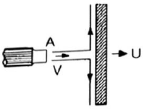
- 196.4
- 273.3
- 783.8
- 984.4
(정답률: 43%)
27. 급격 확대관과 급격 축소관에서 부차적 손실계수를 정의하는 기준속도는?
- 급격 확대관 : 상류속도, 급격 축소관 : 상류속도
- 급격 확대관 : 하류속도, 급격 축소관 : 하류속도
- 급격 확대관 : 상류속도, 급격 축소관 : 하류속도
- 급격 확대관 : 하류속도, 급격 축소관 : 상류속도
(정답률: 65%)
28. 공기가 그림과 같은 안지름 10cm인 직관의 두 단면 사이를 정상유동으로 흐르고 있다. 각 단면에서의 온도와 압력은 일정하다고 하고, 단면 (2)에서의 공기의 평균속도가 10m/s일 때, 단면 (1)에서의 평균속도는 약 몇 m/s인가? (단, 공기의 이상기체라고 가정하고, 각 단면에서의 온도와 압력은 P=100Pa, T1=320K, P2=20Pa, T2=300K이다.)
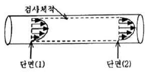
- 1.675
- 2.133
- 2.875
- 3.732
(정답률: 43%)
29. 안지름이 50mm인 관에 비중이 0.8인 유체가 0.26m3/min의 유량으로 흐를 때 유속은 약 몇 m/s인가?
- 1.31
- 2.21
- 13.2
- 22.1
(정답률: 44%)
30. 비중이 1.36의 액체가 흐르는 곳의 압력을 측정하기 위하여 피에조미터를 연결한 결과 90mm가 상승하였다. 이 파이프 안의 압력 약 몇 Pa인가?
- 2462
- 1842
- 1200
- 649
(정답률: 49%)
31. 모세관 현상과 관련하여 액체가 상승하는 높이에 대한 설명으로 틀린 것은?
- 상승높이는 표면장력에 비례한다.
- 상승높이는 관 지름에 반비례한다.
- 상승높이는 유체의 비중량에 반비례한다.
- 상승높이는 유체의 밀도에 비례한다.
(정답률: 45%)
32. 펌프의 이상 현상인 공동현상(cavitation)의 발생 원인으로 거리가 먼 것은?
- 펌프 입구 직전에서의 전압력이 높을 경우
- 펌프의 설치위치가 수면보다 높을 경우
- 펌프의 회전수가 클 경우
- 펌프의 흡입측 배관지름이 작을 경우
(정답률: 42%)
33. 그림과 같은 균일 유동인 직선관에 설치된 피토관의 수은 액주계 높이 차이가 20mm이다. 유동유체는 공기이며, 밀도는 1.23kg/m3일 때 공기의 평균속도는 약 몇 m/s인가? (단, 수은의 비중은 13.6이다.)
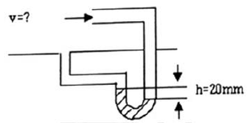
- 2.08
- 46.5
- 65.8
- 131.6
(정답률: 36%)
34. 초기상태의 절대온도와 체적이 각각 T1, v1인 이상기체 1kg을 압력 P인 정압상태로 가열하여 온도를 4T1까지 상승시킨다. 이 때 이상기체가 한 일은 얼마인가?
- Pv1
- 2Pv1
- 3Pv1
- 4Pv1
(정답률: 47%)
35. 온도차이가 10℃, 열전도율 20W/(m∙K),두께 50cm인 벽을 통한 열유속(heat flux)과 온도차이 40℃, 열전도율 A[W/(m∙K)], 두께 10cm인 벽을 통한 열 유속이 같다면 A의 값은?
- 1
- 2
- 5
- 10
(정답률: 41%)
36. 지름이 150mm, 길이 800m의 수평관에 밀도 950kg/m3, 점성계수 0.75kg/(m∙s)인 기름이 0.01m3/s의 유량으로 흐르고 있다 이 기름을 수송하는데 필요한 동력은 몇 kW인가?
- 4.83
- 6.28
- 8.45
- 10.9
(정답률: 27%)
37. 비중이 0.2인 물체를 물 위에 띄웠을 때 물 밖으로 나오는 부피는 전체 부피의 몇 %인가?
- 20
- 40
- 60
- 80
(정답률: 63%)
38. 표준상태의 공기 1kg을 100kPa에서 2MPa가지 가역 단열 압축하였을 경우 엔트로피의 변화는 몇 KJ/K인가?
- 7.1
- 0
- 5.0
- 9.7
(정답률: 48%)
39. 급수탑의 수면과 지상에 설치된 옥외 소화전의 방수구까지의 높이차가 50m일 때 옥외소화전 방수구에서의 정수압력은 약 몇 kPa인가?
- 490
- 980
- 4900
- 9800
(정답률: 48%)
40. 20℃의 물이 안지름 20cm인 원관 내를 1m3/s의 유량으로 흐르고 있을 때 레이놀즈수(Re)는 약 얼마인가?(단, 동점성계수 1.2×10-4 )
- 2841
- 53⑤
- 28412
- 53⑤2
(정답률: 38%)
3과목: 소방관계법규
41. 소방용수시설 및 지리조사에 대한 기준으로 다음 ( )안에 알맞은 것은?
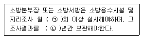
- ㉠ 1, ㉡ 1
- ㉠ 1, ㉡ 2
- ㉠ 2, ㉡ 1
- ㉠ 2, ㉡ 2
(정답률: 81%)
42. 점포에서 위험물에 용기에 담에 판매하기 위하여 지정수량의 40배 이하의 위험물을 취급하는 장소의 취급소 구분으로 옳은 것은? (단, 위험물을 제조외의 목적으로 취급하기 위한 장소이다.)
- 이송취급소
- 일반취급소
- 주유취급소
- 판매취급소
(정답률: 73%)
43. 화재예방, 소방시설 설치∙유지 및 안전관리에 관한 법량상 특정소방대상물의 관계인이 소방안전관리자를 30일 이내에 선임하여야 하는 기준일 중 틀린 것은?
- 신축으로 해당 특정소방대상물의 소방안전관리자를 신규로 선임하여야 하는 경우 : 해당 특정소방대상물의 완공일
- 특정소방대상물을 양수하여 관계인의 권리를 취득한 경우 : 해당 권리를 취득한 날
- 증축으로 인하여 특정소방대상물이 소방안전 관리대상물로 된 경우 : 증축공사의 개시일
- 소방안전관리자를 해임한 경우 : 소방안전 관리자를 해임한 날
(정답률: 43%)
44. 소방기본법령상 소방업무 상호응원협정 체결 시 포함되도록 하여야 하는 사항이 아닌 것은?
- 응원출동의 요청방법
- 응원출동훈련 및 평가
- 응원출동대상지역 및 규모
- 응원출동 시 현장지휘에 관한 사항
(정답률: 56%)
45. 소방기본법령상 특수가연물의 저장 및 취급의 기준 중 틀린 것은? (단, 석탄∙목탄류를 발전용으로 저장하는 경우는 제외한다.) (문제 오류로 실제 시험에서는1, 2, 3번이 정답처리 되었습니다. 여기서는 1번을 누르면 정답 처리 됩니다.)
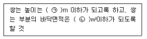
- ㉠ 15, ㉡ 200
- ㉠ 15, ㉡ 300
- ㉠ 10, ㉡ 30
- ㉠ 10, ㉡ 50
(정답률: 64%)
46. 화재예방, 소방시설 설치 유지 및 안전관리에 관한 법령상 임시소방시설을 설치하여야 하는 공사의 종류와 규모 기준 중 틀린 것은?
- 간이소화장치 : 연면적 3000m2 이상 공사의 작업현장에 설치
- 비상경보장치 : 연면적 400m2 이상 공사의 작업현장에 설치
- 간이피난유도선 : 바닥면적이 100m2 이상인 지하층 또는 무창층의 작업현장에 설치
- 간이소화장치 : 지하층, 무장층 또는 4층 이상의 층 공사의 작업현장에 설치, 이 경우 해당 층의 바닥면적이 600m2 이상인 경우만 해당
(정답률: 44%)
47. 소방시설공사업령상 하자보수 대상 소방시설과 하자보수 보증기간 중 옳은 것은?
- 유도표지 : 1년
- 자동화재탐지설비 : 2년
- 물분무등소화설비 : 2년
- 자동소화장치 : 3년
(정답률: 65%)
48. 소방기본법령상 도원된 소방력의 운용과 관련하여 필요한 사항을 정하는 자는? (단, 동원된 소방력의 소방활동 수행 과정에서 발생하는 경비 및 동원된 민간 소방인력이 소방활동을 수행하다가 사망하거나 부상을 입은 경우의 사항은 제외한다.)
- 대통령
- 시∙도지사
- 소방청장
- 행정안전부장관
(정답률: 55%)
49. 위험물안전관리법령상 다수의 제조소등을 설치한 자가 1인의 안전관리자를 중복하여 선임할 수 있는 경우 다음 ( ) 안에 알맞은 것은?
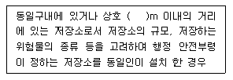
- 50
- 100
- 150
- 200
(정답률: 60%)
50. 화재예방, 소방시설 설치∙유지 및 안전관리에 관한 법률상 주택의 소유자가 설치하여야 하는 소방시설의 설치대상으로 틀린 것은?
- 다세대주택
- 다가구주택
- 아파트
- 연립주택
(정답률: 70%)
51. 화재예방, 소방시설 설치∙유지 및 안전관리에 대한 법령상 특정소방대상물에 설치되는 소방시설 중 소방본부장 또는 소방서장의 건축허가등의 동의대상에서 제외되는 것이 아닌 것은? (단, 설치되는 소방시설이 화재안전기준에 적합한 경우 그 특정소방대상물이다.)
- 인공소생기
- 유도표지
- 누전경보기
- 비상조명등
(정답률: 49%)
52. 소방시설공사업법령상 완공검사를 위한 현장 확인 대상 특정소방대상물의 범위 기준 중 틀린 것은?
- 문화 및 집회시설
- 가스계(이산화탄소∙할로겐화합물∙청정소화약제)소화설비(호스릴소화설비는 제외)가 설치되는 것
- 가연성가스를 제조∙저장 또는 취급하는 시설 중 지상에 노출된 가연성가스 탱크의 저장용량합계가 1000톤 이상인 시설
- 연면적 1000m2 이상이거나 11층 이상인 특정소방대상물 아파트
(정답률: 56%)
53. 위험물안전관리법령상 정기검사를 받아야 하는 특정옥외탱크저장소의 관계인은 특정옥외탱크저장소의 설치허가에 따른 완공검사필증을 발급받은 날부터 몇 년 이내에 정기검사를 받아야 하는가?
- 12
- 11
- 10
- 9
(정답률: 48%)
54. 소방기본법상 타고 남은 불 또는 화기가 있을 우려가 있는 재의 처리 명령에 정당한 사유없이 따르지 아니하거나 이를 방해한 자에 대한 벌칙기준으로 옳은 것은?
- 300만원 이하의 벌금
- 200만원 이하의 벌금
- 100만원 이하의 벌금
- 50만원 이하의 벌금
(정답률: 38%)
55. 소방청장, 소방본부장 또는 소방서장은 소방특별조사를 하려면 관계인에게 조사대상, 조사기간 및 조사사유 등을 며칠 전에 서면으로 알려야 하는가? (단, 긴급하게 조사할 필요가 있는 경우와 사전에 통지하면 조사목적을 달성할 수 없다고 인정되는 경우는 제외한다.)
- 7
- 10
- 12
- 14
(정답률: 51%)
56. 위험물안전관리법령상 관계인이 예방규정을 정하여야 하는 위험물을 취급하는 제조소의 지정수량 기준으로 옳은 것은?
- 지정수량의 10배 이상
- 지정수량의 100배 이상
- 지정수량의 150배 이상
- 지정수량의 200배 이상
(정답률: 53%)
57. 소방기본법령상 소방용수시설을 주거지역∙상업지역 및 공업지역에 설치하는 경우 소방대상물과의 수평거리는 몇 m이하가 되도록 하여야 하는가?
- 100
- 140
- 150
- 200
(정답률: 56%)
58. 소방용품의 형식승인을 받지 아니하고 소방용품을 제조하거나 수입한 자에 대한 벌칙 기준으로 옳은 것은?
- 3년 이하의 징역 또는 3천만원 이하의 벌금
- 1년 이하의 징역 또는 1천만원 이하의 벌금
- 300만원 이하의 벌금
- 100만원 이하의 벌금
(정답률: 57%)
59. 화재예방, 소방시설 설치∙유지 및 안전관리에 관한 법령상 소방특별조사의 항목이 아닌 것은?
- 화재의 예방조치 등에 관한 사항
- 소방시설등의 자체점검 및 정기적 점검등에 관한 사항
- 공공기관의 소방안전관지 업무 수행에 관한 사항
- 불을 사용하는 설비 등의 관리와 특수가연물의 생산∙품질관리에 관한 사항
(정답률: 46%)
60. 특정소방대상물의 소방시설 설치의 면제기준 중 다음 ( ) 안에 알맞은 것은?
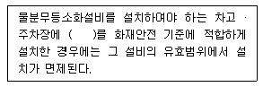
- 옥내소화전설비
- 스프링클러설비
- 간이스프링클러설비
- 청정소화약제소화설비
(정답률: 68%)
4과목: 소방기계시설의 구조 및 원리
61. 전역방출방식의 고발포용 고정포방출구 설치 기준 중 다음 ( ) 안에 알맞은 것은?
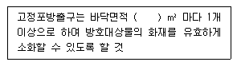
- 600
- 500
- 400
- 300
(정답률: 57%)
62. 피난기구의 화재안전기준 중 피난기구 종류로 옳은 것은?
- 공기안전매트
- 방열복
- 공기호흡기
- 인공소생기
(정답률: 74%)
63. 대형소화기를 설치하여야 할 특정소방대상물 또는 그 부분에 옥내소화전설비를 설치할 경우 해당 설비의 유효범위안의 부분에 대한 대형소화기 감소기준으로 옳은 것은?
- 1/3을 감소할 수 있다.
- 1/2을 감소할 수 있다.
- 2/3을 감소할 수 있다.
- 설치하지 아니할 수 있다.
(정답률: 68%)
64. 전역방출방식의 이산화탄소 소화설비를 설치한 특정소방대상물 또는 그 부분에 설칳는 자동폐쇄장치의 설치기준 중 다음 ( ) 안에 알맞은 것은?
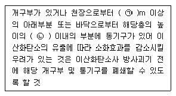
- ㉠ 1, ㉡ 2/3
- ㉠ 1, ㉡ 1/2
- ㉠ 0.3, ㉡ 2/3
- ㉠ 0.3, ㉡ 1/2
(정답률: 51%)
65. 상수도 소화용수설비의 설치기준 중 다음 ( ) 안에 알맞은 것은?
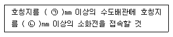
- ㉠ 80, ㉡ 65
- ㉠ 75, ㉡ 100
- ㉠ 65, ㉡ 100
- ㉠ 50, ㉡ 65
(정답률: 52%)
66. 청정소화약제의 저장용기 설치기준 중 틀린 것은? (단, 불활성가스 청정소화약제 저장용기의 경우는 제외한다.)
- 방호구역 외에 설치한 경우에는 방화문으로 구획된 실에 설치할 것
- 용기간의 간격은 점검에 지장이 없도록 3cm 이상의 간격을 유지할 것
- 온도가 40℃이하이고 온도의 변화가 작은 곳에 설치할 것
- 저장용기의 약제랑 손실이 5%를 초과하거나 압력손실이 10%를 초과할 경우에는 재충전 하거나 저장용기를 교체할 것
(정답률: 42%)
67. 소화수조 등에 관한 기준 중 틀린 것은?
- 수화수조, 저수조의 채수구 또는 흡수관 투입구는 소방차가 2m 이내의 지점까지 접근할 수 있는 위치에 설치할 것
- 채수구는 소방용호스 또는 소방용흡수관에 사용하는 구경 65mm 이상의 나사식 결합금속구를 설치할 것
- 지하에 설치하는 소화용수설비의 흡수관 투입구는 그 한변이 0.8m 이상이거나 직경이 0.8m 이상인 것으로 하고, 소요수량이 60m3 미만인 것은 1개 이상을 설치하여야 하며 “흡관투입구”라고 표시한 표지를 할 것
- 채수구는 지면으로부터 높이가 0.5m이상 1m 이하의 위치에 설치하고 “채수구”라고 표시한 표지를 할 것
(정답률: 53%)
68. 특별피난계단의 계단실 및 부속실 제연설비의 차압 등에 관한 기준 중 틀린 것은?
- 제연설비가 가동되었을 경우 출입문의 개방에 필요하나 힘은 150N 이하로 하여야 한다.
- 제연구역과 옥내와의 사이에 유지하여야 하는 최소차압은 40Pa 이상으로 하여야 한다.
- 옥내에 스프링클러설비가 설치된 경우 제연구역과 옥내와의 사이에 유지하여야 하는 최소차압은 12.5Pa 이상으로 하여야 한다.
- 계단실과 부속실을 동시에 제연 하는 경우 부속실의 기압은 계단실과 같게 하거나 계단실의 기압보다 낮게 할 경우에는 부속실과 계단실의 압력차이는 5Pa 이하가 되도록 하여야 한다.
(정답률: 56%)
69. 전역방출방식 할로겐화합물소화설비의 분사헤드 설치기준 중 할론 1211 분사헤드의 방사압력은 최소 몇 MPa 이상이어야 하는가?
- 0.1
- 0.2
- 0.7
- 0.9
(정답률: 40%)
70. 연결송수관설비 방수용기구함의 설치기준 중 틀린 것은?
- 방수기구함은 피난층과 가장 가까운 층을 기준으로 2개층 마다 설치하되, 그 층의 방수구마다 보행거리 5m 이내에 설치할 것
- 방수기구함에는 “방수기구함”이라고 표시한 축광식 표지를 할 것
- 방수기구함의 길이 15m 호스는 방수구에 연결하였을 때 그 방수구가 담당하는 구역의 각 부분에 유효하게 물이 부려질 수 있는 개수 이상을 비치할 것, 이 경우 쌍구형 방수구는 단구형 방수구의 2배 이상의 개수를 설치할 것
- 방수기구함의 방사형 관창은 단구형 방수구의 경우에는 1개, 쌍구형 방수구의 경우에는 2개 이상 비치할 것
(정답률: 44%)
71. 스프링클러설비 헤드의 설치기준 중 높이가 4m 이상인 공장 및 창고에 설치하는 스프링클러헤드는 그 설치장소의 평상시 최고 주위온도에 관계없이 최소 표시온도 몇 ℃ 이상의 것으로 설치할 수 있는가? (단, 랙크식 창고를 포함한다.)
- 162℃
- 121℃
- 79℃
- 64℃
(정답률: 64%)
72. 옥내소화전설비 배관의 설치기준 중 다음 ( ) 안에 알맞은 것은?
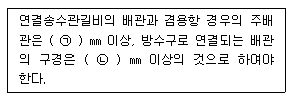
- ㉠ 40, ㉡ 50
- ㉠ 50, ㉡ 40
- ㉠ 65, ㉡ 100
- ㉠ 100, ㉡ 65
(정답률: 64%)
73. 특정소방대상물별 소화기구의 능력단위 기준 중 틀린 것은? (단, 건축물의 주요구조부가 내화구조이고 벽 및 반자의 실내에 면하는 부분이 불연재료로 된 특정소방대상물인 경우이다.)
- 위락시설은 해당 용도의 바닥면적 60m2 마다 능력단위 1단위 이상
- 장례식장 및 의료시설은 해당 용도의 바닥면적 100m2 마다 능력단위 1단위 이상
- 관광휴게시설은 해당 용도의 바닥면적 200m2 마다 능력단위 1단위 이상
- 공동주택은 해당 용도의 바닥면적 100m2 마다 능력단위 1단위 이상
(정답률: 41%)
74. 간이스프링클러설비의 배관 및 밸브 등의 설치순서 중 다음 ( )안에 알맞은 것은?
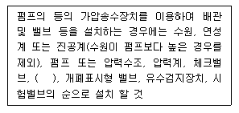
- 진공계
- 플렉시블 조인트
- 성능시험배관
- 편심 레듀셔
(정답률: 61%)
75. 특정소방대상물의 보가 있는 부분의 포헤드 설치기준 중 포헤드와 보 하단의 수직거리가 0.2m 일 경우 포헤드와 보의 수평거리 기준으로 옳은 것은?
- 0.75m 미만
- 0.75m 이상 1m 미만
- 1m 이상 1.5m 미만
- 1.5m 이상
(정답률: 35%)
76. 피난기구의 설치기준 중 노유자시설로 사용되는 층에 있어서 그 층의 바닥면적 몇 m2 마다 1개 이상을 설치하여야 하는가?
- 300
- 500
- 800
- 1000
(정답률: 58%)
77. 연소할 우려가 있는 개구부에 드렌처설비를 설치한 경우 해당 개구부에 한하여 스프링클러헤드를 설치하지 아니할 수 있는 드렌처설비의 설치 기준으로 틀린 것은?
- 드렌처헤드는 개구부 위 측에 2.5m 이내마다 1개를 설치할 것
- 제어밸브는 특정소방대상물 층마다에 바닥면으로부터 0.8m 이상 1.5m 이하의 위치에 설치할 것
- 수원의 수량은 드렌처헤드가 가장 많이 설치된 제어밸브의 드렌처헤드의 설치개수에 2.6m3 를 곱하여 얻은 수치 이상이 되도록 할 것
- 드렌처설비는 드렌처헤드가 가장 많이 설치된 제어밸브에 설치된 드렌처헤드를 동시에 사용하는 경우에 각각의 헤드선단에 방수압력이 0.1MPa 이상, 방수량이 80L/min 이상이 되도록 할 것
(정답률: 44%)
78. 미분무소화설비 용어의 정의 중 다음 ( ) 안에 알맞은 것은?
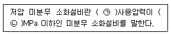
- ㉠최고, ㉡ 1.2
- ㉠최저, ㉡ 1.2
- ㉠최고, ㉡ 0.7
- ㉠최저, ㉡ 0.7
(정답률: 59%)
79. 화재 시 현저하게 연기가 찰 우려가 없는 장소로서 호스릴 분말소화설비를 설치할 수 있는 장소의 기준 중 다음 ( ) 안에 알맞은 것은?
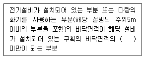
- 1/5
- 1/3
- 1/2
- 2/3
(정답률: 43%)
80. 분말소화설비의 가압용가스 설치기준 중 옳은 것은?
- 분말소화약제의 가압용가스 용기를 7병 이상 설치한 경우에는 2개 이상의 용기에 전자개방밸브를 부착하여야 한다.
- 분말소화약제의 가압용가스 용기에는 2.5MPa이하의 압력에서 조정이 가능한 압력조정기를 설치하여야 한다.
- 가압용가스에 질소가스를 사용하는 것의 질소가스는 소화약제 1kg에 대하여 10L이상, 이산화탄소를 사용하는 것의 이산화탄소의 소화약제 1kg에 대하여 10g에 배관의 청소에 필요한 양을 가산한 양 이상으로 할 것
- 축압용가스에 질소가스를 사용하는 것의 질소가스는 소화약제 1kg마다 40L 이상, 이산화탄소를 사용하는 것의 이산화탄소는 소화약제 1kg에 대하여 20g에 배관의 청소에 필요한 양을 가산한 양 이상으로 할 것
(정답률: 41%)